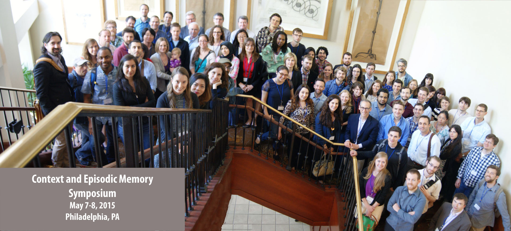

CEMS 2016

Click here for a full-resolution JPEG image.

The 2016 Context and Episodic Memory Symposium (CEMS), then in its twelfth year, was held at the Loews Philadelphia Hotel in Philadelphia, PA, on May 5th and 6th, 2016.
The symposium is designed to be a forum for the exchange of ideas among colleagues working on theoretical and empirical approaches to the study of context and episodic memory, broadly construed.
Location & Hotel
The 2016 symposium was held in historic Philadelphia, at the Loews Hotel in Center City.
The Loews Philadelphia Hotel is located at 1200 Market Street, Philadelphia, PA, and offers first-rate accommodations to our attendees.
Hotel
In addition to its role as venue, the Loews Hotel in Center City, Philadelphia, served as the preferred hotel for CEMS 2016.
Click here to view this location on Google Maps
Travel
The University of Pennsylvania is served by Philadelphia International Airport and Amtrak 30th Street Station, and is a short train or taxi ride away from both.
From the Airport
- Towncar
- Uber is a on-demand towncar service that you can summon using an app on your iPhone or Android device, or from m.uber.com, or by texting an address and city to UBR-CAB (827-222).
- Airport flat rate to and from Center City (including Penn campus) is $60 for a towncar (up to 4 people comfortably) or $85 for a luxury SUV (up to 6 people comfortably)
- Normal rates for a towncar are a $7.00 base fare plus $3.75 per mile, or $0.85 per minute of wait time, with a $15 minimum fare. SUV rates are higher.
- Link a credit card to your account. No need to pay your driver directly, and tip is included.
- You must create an account first. Sign up using this CEMS link and receive a $10 bonus credit towards your first ride.
- Taxi
- Taxi fare between Center City Philadelphia (including Penn campus) and the airport is $28.50 each way for one passenger.
- For trips to Center City from the airport, there is an additional $1 fee per passenger. Most cabs hold up to 3 people.
- The trip takes between 15-30 minutes depending on traffic.
- Regional Rail
- The airport is served by SEPTA's Airport Regional Rail line, which stops at each terminal.
- In Center City, you may use either the University City or 30th Street stops on the Airport line.
- University City is a pleasant 0.6 mi walk through Penn's campus, while 30th Street Station is a less-pleasant 0.8 mi, but easier to hail a cab if desired.
- Tickets are $7.00 per person each way.
- The train is scheduled to run every 30 minutes.
- The trip takes 15-20 minutes depending on terminal, and the weekday schedule may be found here.
From 30th Street Station
- The walk from 30th Street Station to the Inn at Penn is roughly 0.8 miles and goes through the campus of Drexel University.
- There is a taxi stand immediately outside the East doors of the station.
- SEPTA's trolley and bus lines connect at 30th Street Station and cost $2.00 (exact change only, or you may buy tokens).
Driving/Parking
- The University of Pennsylvania is close to both I-76 and I-95.
- The Inn at Penn offers valet parking Charge at $39.00 for overnight parking with in and out privileges and 20.00 for daily event parking (prices subject to change).
- Self parking is available at a garage at 38th & Sansom, one block from The Inn At Penn. More garages may be found on this map.
Getting Around
- SEPTA subways, trolleys, and buses run all over Philadelphia.
- Normal base rate is $2.25 cash (exact change only), or a token. More information about fares can be found here.
- You may find a complete system map here. You can also find transit directions on Google Maps.
- Taxis are plentiful.
- Fares are a $2.70 flag drop plus $0.23 per 1/10 mi or 38 seconds of wait time.
- Uber is a on-demand towncar service that you can summon using an app on your iPhone or Android device, or from m.uber.com, or by texting an address and city to UBR-CAB (827-222).
- Normal rates for a towncar are a $7.00 base fare plus $3.75 per mile, or $0.85 per minute of wait time, with a $15 minimum fare. SUV rates are higher.
- Link a credit card to your account. No need to pay your driver directly, and tip is included.
- You must create an account first. Sign up using this CEMS link and receive a $10 bonus credit towards your first ride.
Abstract Submission
Abstract Submission for CEMS 2016 is now CLOSED. Thank you for your submissions.
Submit an abstract for consideration to give a spoken presentation at the 12th Annual Context and Episodic Memory Symposium (CEMS) to be held on May 5 and 6, at the University of Pennsylvania in Philadelphia, Pa. The symposium is designed to be a forum for the exchange of ideas among colleagues working on theoretical and empirical approaches to the study of context and episodic memory, broadly construed.
The format of CEMS is to have a relatively small number of spoken presentations each followed by a commentary given by a scientist working on related problems. The program committee aims to identify submissions that highlight major new theoretical and/or empirical advances. Papers not selected for these spoken presentations can be given as poster presentations. In previous years, posters have been a major highlight of the meeting and have been very well attended.
We would encourage submission of a written description of work in addition to an abstract if such a description is available.
Please email abstract paper submissions to Katherine Hurley (research coordinator of the Computational Memory Lab at the University of Pennsylvania) at context.symposium@gmail.com by February 12, 2016.
Schedule
If you are presenting and have scheduling conflicts, please let us know as soon as possible by emailing context.symposium@gmail.com
| Thursday | Friday | ||
|---|---|---|---|
| 8:30 | Breakfast | 8:30 | Breakfast |
| 9:00 | Opening Remarks | 9:00 | Frontal-Hippocampal Interactions, including: |
| 9:15 | Associative Processes Overview | 9:00 | Neal Morton |
| 9:20-10:20 | Associative Processes symposium, including: | 9:25 | Michael Mack |
| 9:20 | Sean Polyn | 9:50 | Fang Wang |
| 9:40 | Misha Tsodyks | 10:15 | Break |
| 10:00 | Jeremy Caplan | 10:30 | Hippocampal Processes, including: |
| 10:20 | Associative Processes panel discussion | 10:30 | Marc Coutanche |
| 10:35 | Break | 10:50 | Alexa Tompary |
| 10:50 | Keynote address: Jeffrey Zacks | 11:10 | Nicole Long |
| 11:50 | Group Photo | 11:30 | Nicholas Hindy |
| 12:05 | Lunch | 11:50 | David Ross |
| 13:40 | Retrieval Latencies overview | 12:10 | Lunch |
| 13:45-13:05 | Retrieval Latencies symposium, including: | 13:40 | Chris Baldassano |
| 13:45 | Adam Osth | 14:05 | Electrophysiology overview |
| 14:05 | Jeffrey Starns | 14:10 | Electrophysiology symposium, including: |
| 14:25 | William J. Hopper | 14:10 | Joshua Jacobs |
| 14:45 | Gregory Cox | 14:30 | Youssef Ezzyat |
| 15:05 | Retrieval Latencies panel discussion | 14:50 | Kareem Zaghloul |
| 15:25 | Break | 15:10 | Electrophysiology panel discussion |
| 15:40-16:30 | Data Blitz, including: | 15:30-17:00 | Poster Session 2 |
| 15:40 | Robert Yaffe | ||
| 15:50 | Jack Wilson | ||
| 16:00 | Ghootae Kim | ||
| 16:10 | Halle Zucker | ||
| 16:20 | Ida Momennejad | ||
| 16:30-16:55 | Marc Howard | ||
| 17:00-18:30 | Reception and Poster Session 1 |
List of featured spoken presentations
First author will be presenting unless otherwise noted.
- Keynote Presentation: Event Comprehension and Memory in the Predictive Brain, by Dr. Jeffrey Zacks, Associate Chair, Department of Psychological and Brain Sciences, Professor of Psychological and Brain Sciences, Professor of Radiology, Washington University in St. Louis
Full-length Presentations (listed by mini-symposia [noted by "symposium" at the end of the respective topic] as applicable; affiliation noted by first author)
- Associative Processes symposium
- Sean M. Polyn, Neal W. Morton, Joshua D. McCluey (Vanderbilt University): Eddies in the flow of mental time: Semantic structure can remove the forward asymmetry of free recall
- Sandro Romani, Mikhail Katkov, Misha Tsodyks (presenter) (Columbia University): Practice Makes Perfect in Memory Recall
-
Jeremy B. Caplan, Rachel L. Burton, Mayank Rehani, Jennifer A. Cole, Isabel Lek (University of Alberta): Associative independence revisited
-
Retrieval Latencies symposium
- Adam Osth, Beatrice Bora, Andrew Heathcote, Simon Dennis (University of Melbourne): Diffusion vs. linear ballistic accumulation: Different models, different conclusions about the slope of the zROC in recognition memory
- Jeffrey Starns, Qiuli Ma (University of Massachusetts): Continuous versus discrete information in recognition memory
- William J. Hopper, David E. Huber (University of Massachusetts): The Primary and Convergent Retrieval Model of Recall
-
Gregory E. Cox, Amy H. Criss (Syracuse University): Parallel Facilitatory Retrieval of Item and Associative Information from Event Memory
-
Marc Howard, Karthik Shankar, Zoran Tiganj (Boston University): A general framework for efficient cognitive computation
-
Frontal-Hippocampal Interactions
- Neal W. Morton, Margaret L. Schlichting, Alison R. Preston (University of Texas at Austin): Developing a neurocognitive model of memory integration
- Michael L. Mack, Bradley C. Love, Alison R. Preston (University of Texas at Austin): Attention shapes hippocampal representations during learning through interactions with frontoparietal cortex
-
Fang Wang, Rachel A. Diana (Virginia Polytechnic Institute and State University): Temporal context processing within hippocampal subfields
-
Hippocampal Processes
- Marc N. Coutanche (University of Pittsburgh): The rapid consolidation of new knowledge into cortical networks through fast mapping
- A. Tompary, L. Davachi (New York University): Converging evidence for consolidation-related integration of overlapping episodic memories
- Nicole M. Long, Hongmi Lee, Marvin M. Chun, Brice A. Kuhl (University of Oregon): Hippocampal mismatch signals are modulated by the similarity between predicted and realized outcomes
- Nicholas C. Hindy, Felicia Y. Ng, Nicholas B. Turk-Browne (Princeton University): Action-based prediction in the hippocampus
-
David A. Ross, D. Merika Wilson, Patrick Sadil, Rosemary A. Cowell (University of Massachusetts): Hippocampus is not the unique seat of pattern completion in cued recall
-
Christopher Baldassano, Janice Chen, Jonathan W. Pillow, Uri Hasson, Kenneth A. Norman (Princeton University): Tracking brain activity during continuous perception and recall
-
Electrophysiology symposium
- Joshua Jacobs, Jonathan Miller, Sang Ah Lee, Tom Coffey, Andrew J. Watrous, Michael R. Sperling, Ashwini Sharan, Gregory Worrell, Brent Berry, Bradley Lega, Barbara Jobst, Kathryn Davis, Robert E. Gross, Sameer A. Sheth, Youssef Ezzyat, Sandhitsu R. Das, Joel Stein, Richard Gorniak, Michael J. Kahana, and Daniel S. Rizzuto (Columbia University): Electrical stimulation in the human medial temporal lobe impairs spatial and episodic memory in a manner that illustrates the role of this structure in memory formation
- Youssef Ezzyat, John F. Burke, Deborah F. Levy, Anastasia Lyalenko, Michael R. Sperling, Ashwini D. Sharan, Gregory A. Worrell, Michal T. Kucewicz, Barbara C. Jobst, Katherine A. Davis, Timothy H. Lucas, Cory S. Inman, Bradley C. Lega, Joel M. Stein, Sandhitsu Das, Richard Gorniak, Daniel S. Rizzuto, Michael J. Kahana (University of Pennsylvania): Targeted brain stimulation to modulate episodic memory encoding in humans
- Kareem A. Zaghloul, Robert B. Yaffe, Julio Chapeton, Sara K. Inati (National Institutes of Health): Functional connectivity in human intracranial EEG is reinstated during cued recall
Data Blitz Session
-
Robert Yaffe, Jennifer Arai, Sarah Inati, Kareem Zaghloul (National Institutes of Health): Memory retrieval exhibits replay of spectral power dynamics of encoding on faster timescale
-
J.H. Wilson, A.H. Criss (Syracuse University): The list strength effect in cued recall
-
Ghootae Kim, Kenneth A. Norman, Nicholas B. Turk-Browne (Princeton University): Incorrectly predicted memories become differentiated after restudy
-
Halle R. Zucker, Maureen Ritchey, Arne D. Ekstrom, Andy P. Yonelinas, Charan Ranganath (University of California, Davis): Memory for space and time in the human hippocampus
-
Ida Momennejad, A. Ross Otto, Eeh Pyoung Rhee, Nathaniel Daw, Ken Norman (Princeton University): Changing the past: The interplay of replay and uncertainty in retrospective revaluation
Poster Sessions
If you are presenting and have schedule conflicts, please let us know by emailing context.symposium@gmail.com as soon as possible.
Thursday
-
Jeremy B. Caplan, Christopher R. Madan (University of Alberta): Imageability may enhance pair-memory by leveraging the hippocampus
-
M. Karl Healey, Michael J. Kahana (University of Pennsylvania): Neural dynamics during memory encoding provide a biomarker of successful aging
-
Margaret L. Schlichting, Katharine F. Guarino, Anna C. Schapiro, Nicholas B. Turk-Browne, Alison R. Preston (University of Texas at Austin): Structural development of hippocampus and medial prefrontal cortex is related to statistical learning and inference
-
Ryan J. Hubbard, Kara D. Federmeier (University of Illinois): Encoding the Context: Effects of Sentential Context and Predictability on Recognition Memory
-
O. Bein, M. Trzewik, A. Maril (Hebrew University of Jerusalem): The role of prior knowledge in learning over repetitions
-
Michael S. Cohen, Jesse Rissman, Mariam Hovhannisyan, Alan D. Castel, Barbara J. Knowlton (Northwestern University; University of California, Los Angeles): Dissociating strategy-driven and automatic effects of value on memory
-
James E. Kragel, John F. Burke, Michael J. Kahana (University of Pennsylvania): Core episodic encoding and retrieval processes revealed by dynamics of oscillatory brain activity
-
Robert J. Molitor, Margaret L. Schlichting , Michael L. Mack, Katharine F. Guarino, Sam McKenzie, Howard Eichenbaum, Alison R. Preston (University of Texas at Austin): Generalization of schema representations to novel contexts is supported by hippocampus and medial prefrontal cortex
-
Zoran Tiganj, Joseph M. Di Lascio, Per B. Sederberg, Michael J. Kahana, Daniel S. Rizzuto, Marc W. Howard (Boston University): Identifying the neural processes that govern contextual encoding and contextual retrieval
-
Emily R. Weichart, Andrew J. Bigler, Vincent Y. Man, William A. Cunningham, Per B. Sederberg (Ohio State University): Testing the effects of context repetition for valence and items
-
N. Rouhani, K. Norman, Y. Niv (Princeton University): Reward prediction errors enhance episodic memory
-
Lynn J. Lohnas, Lila Davachi (New York University): Disentangling interactions between context, spacing and repetition to item and source memory
-
Y. Yeshurun, J. Chen, U. Hasson (Princeton University): From words to narratives: amplification of global meaning in the brain
Friday
-
Vishnu Sreekumar, Dylan M. Nielson, Troy A. Smith, Simon Dennis, Per B. Sederberg (Ohio State University): The precuneus represents subjective content during vivid reminiscence of real-world experience
-
Tomi Ann Limcangco, Kenichi Kato, Shrida Sahadevan, and Jeremy Caplan (University of Alberta): Simple strategies can improve memory for order of items within word-pairs
-
Patrick Sadil, Rosemary A. Cowell (University of Massachusetts): Computational Model of Perceptual Deficits in Medial Temporal Lobe Amnesia
-
Joshua D. McCluey, Meghan A. Collins, Gregory M. Kyle, Sean M. Polyn (Vanderbilt University): Increased semantic similarity reduces the forward asymmetry in free recall
-
E. Cowan, A. Liu, S. Kothare, O. Devinksky, L. Davachi (New York University): Sleep relates to the neural representation and behavioral stability of memory
-
Inder Singh, Marc Howard (Boston University): Judgement of imminence: Predictions from an underlying temporal representation
-
A.C. Heusser, T. Brooks, L. Davachi (New York University): OpenEXP: An open-source platform for running EEG and behavioral experiments in the wild
-
Joseph M. Di Lascio, Daniela J. Palombo, Per B. Sederberg, Mieke H. Verfaellie, Marc W. Howard (Boston University): Computational Modeling of Free Recall in Memory Disordered Patients
-
Sarah DuBrow, Brynn Sherman, Lila Davachi (New York University): Measuring neural dynamics underlying short duration estimation with fMRI
-
Sucheta Chakravarty, Isha Ober, Christopher R. Madan, Yvonne Y. Chen, Esther Fujiwara, Jeremy B. Caplan (University of Alberta): Feedback related negativity signals prediction error in a value-learning task involving many stimuli
-
Brian Siefke, Per Sederberg (Ohio State University): Violation of visual timing enhances subsequent memory for words
-
Kenichi Kato, Jeremy B. Caplan (University of Alberta): Participants do not study word pairs differently to optimize for order
-
M. C. Inhoff, L. A. Libby, T. Noguchi, B. C. Love, C. Ranganath (University College London): Emergence of contextual representations revealed by Bayesian model-based fMRI
Past Symposia
For information about previous years' CEMS, please click here.